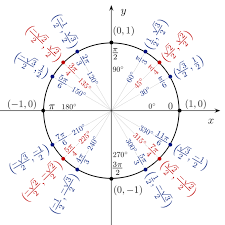
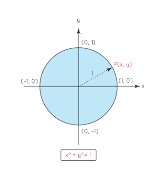
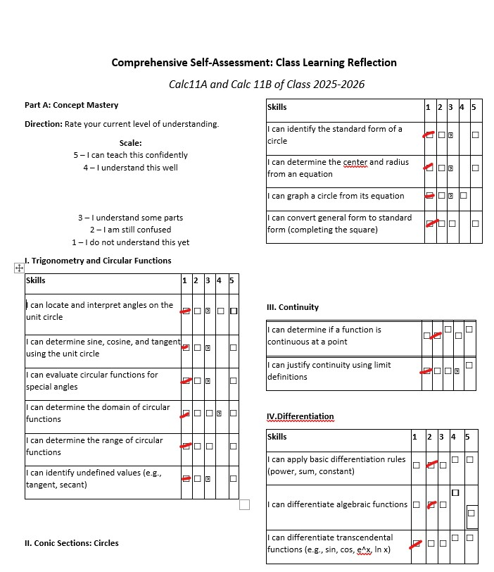
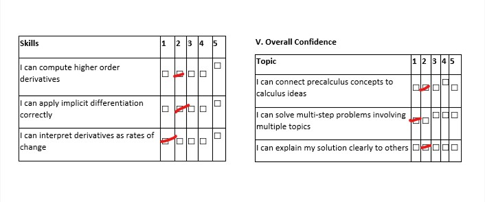
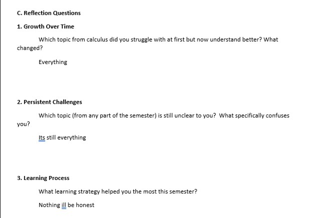
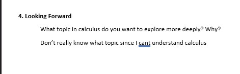

Using the Unit Circle in Real Life
The unit circle helps explain circular motion like a Ferris wheel and how height changes over time.
The Ferris Wheel and the Unit Circle
A Ferris wheel shows how sine and cosine model real circular motion.

Understanding the Unit Circle
The unit circle has radius 1 and follows x²+y²=1.

Finding Points on the Unit Circle
Coordinates are (cosθ,sinθ).

Sine Cosine and Tangent
tanθ = sinθ / cosθ
Example: tan45° = 1
Summary of the Unit Circle
Sine and cosine repeat through every rotation.
Activity 5 Pairwise Midpoints and Distances
Applied midpoint and distance formulas to Philippine landmarks.
Digital Task 3
Exploring transformations of quadratic graphs.
Graph 1: Flipped vertically and shifted up.
Graph 2: Vertically stretched parabola.
Graph 3: Shifted up 4 units.
Graph 4: Vertically compressed.
Graph 5: Vertically stretched.
Graph 6: Narrower parabola.
Graph 7: Shifted right 3 and down 2.
Digital Task 4
Digital Task 5 – Calculus in Motion
s(t)=t², v(t)=2t, a(t)=2
Calculus explains motion and change in real life.
Image Gallery



